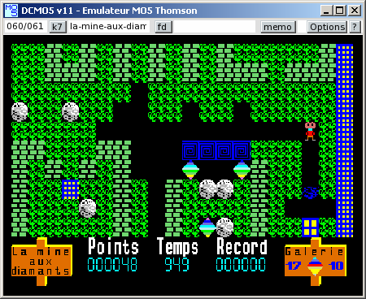
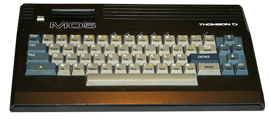
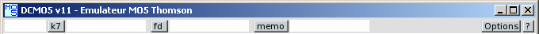
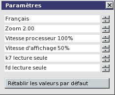
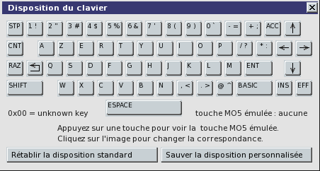
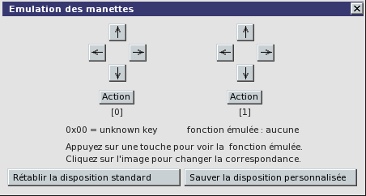
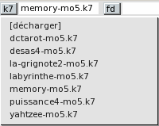
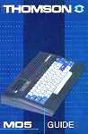

DCMO5 v11 : Emulateur MO5 Thomson
DCMO5 v11 est un émulateur de MO5 Thomson créé par Daniel Coulom (mail to danielcoulom at gmail point com).
Le site web de DCMO5 est dcmo5.free.fr.


Fonctions
DCMO5 v11 émule :
- L'unité centrale UC50-001 equipée du microprocesseur Motorola MC6809E.
- Le moniteur et l'interpréteur Basic intégré.
- Le clavier, l'écran et le crayon optique CR50-001.
- Le module d'extension "Musique et Jeu" SX90-018, avec deux manettes.
- Le lecteur/enregistreur de programmes MK50-050 (LEP).
- Le lecteur de disquette 5"1/4 DD90-320 et son contrôleur CD90-640.
- Les cartouches MEMO5 et l'extension mémoire 64 Ko.
- L'imprimante parallèle (dans un fichier).
DCMO5 v11 n'émule pas :
- Le nanoréseau Léanord.
- Le Quick Disk Drive QD90-128
- Les autres extensions : IN57-001, DI90-011, etc.
L'interface utilisateur est bilingue : anglais et francais.
Informations techniques
DCMO5 est un logiciel libre.
- Il est distribué sous licence GPL (voir la licence officielle)
- Il est programmé en langage C
- Il utilise la bibliothèque SDL pour la video et l'audio.
- Il utilise la bibliothèque SDL_ttf avec la police Vera de Bitstream pour l'affichage des textes.
- L'interface utilisateur a été développée spécialement pour ce projet.
- Il n'utilise pas de fonction spécifique à une machine ou à un système d'exploitation, pour rester portable.
- Il est compatible avec Windows, Linux, Mac-OS et beaucoup d'autres systèmes.
Installation
DCMO5 v11 doit fonctionner sur tous les PC à partir du Pentium II, avec une carte son, une carte video récente, un système Windows ou Linux postérieur à 1998. Il fonctionne aussi sur d'autres machines et d'autres systèmes. La liste sera donnée ici en fonction des témoignages d'utilisateurs.
Testé dans

 A tester dans :
A tester dans :


 etc.
etc.
Tous systèmes
- Créez un nouveau dossier et nommez-le dcmo5 (ou tout autre nom à votre convenance).
- Dans ce dossier chargez l'archive dcmo5v11.0.zip ou dcmo5v11.0.tar.gz
- Décompactez l'archive en conservant la structure des répertoires.
- Installez les bibliothèques SDL et SDL_ttf
- Compilez DCMO5 en fonction de votre système d'exploitation (dans Windows ce n'est pas nécessaire).
- Le sous-dossier /software contient les images de cassettes MO5 (extension .k7), de disquettes (extension .fd) et de cartouches MEMO5 (extension .rom). Vous pouvez le compléter avec vos propres fichiers (voir aussi la collection de dcmoto).
Windows
Le fichier exécutable dcmo5.exe est fourni. Il n'est donc pas nécessaire de compiler. Un double clic sur le nom du fichier suffit pour exécuter dcmo5. Il est aussi possible de créer un raccourci et de le placer sur le bureau ou dans la barre des tâches. Rappel : les bibliothèques SDL et SDL_ttf doivent être installées. Les fichiers SDL.dll et SDL_ttf.dll peuvent être dans le dossier dcmo5, ou dans tout autre dossier accessible pour leur exécution, par exemple c:/windows/system32.
Linux
Après avoir installé les bibliothèques SDL et SDL_ttf, compilez dcmo5 avec le makefile fourni. Pour celà ouvrez un terminal dans le dossier dcmo5 et exécutez la commande make.
Mac-OS
A completer...
Utilisation
Utilisez la fonction adéquate de votre système pour lancer le programme. Dans Windows, par exemple, vous pouvez double-cliquer sur le nom du programme dcmo5.exe, ou créer un raccourci sur le bureau.
Commandes de l'émulateur
Toutes les commandes de l'émulateur sont effectuées à partir de la barre de menu située en haut de la fenêtre principale.

- A propos de DCMO5
Cliquez sur le bouton [?] à droite de la barre de menu.

- Paramètres
Cliquez sur le bouton [Options] à droite de la barre de menu, et sélectionnez la ligne Paramètres...
Les boutons à droite de chaque ligne permettent de sélectionner la valeur désirée.
Le boutons [Rétablir les valeurs par défaut] réinitialise toutes les valeurs.
Notez que la vitesse d'affichage a un impact important sur les ressources utilisées. Avec une machine lente, si le rendu audio est mauvais, il faut diminuer la vitesse d'affichage jusqu'à obtenir un son correct.

- Configuration du clavier
Cliquez sur le bouton [Options] à droite de la barre de menu, et sélectionnez la ligne Clavier...
Les codes des touches dépendent du type de clavier et du système d'exploitation.
Il est impossible de prévoir toutes les configurations. Par défaut dcmo5 utilise un clavier standard francais dans Windows XP ou Linux. Pour les autres configurations il faut redéfinir la disposition. Le principe est simple : à chaque touche physique du MO5 correspond une touche physique de la machine utilisée. Mode opératoire : tapez une touche sur votre clavier. La touche correspondante du MO5 est affichée. Si elle n'est pas correcte, cliquez sur l'image de la touche MO5 souhaitée. Répétez l'opération pour les 58 touches du MO5. Ensuite vous pouvez sauver votre disposition personnalisée, elle sera ainsi utilisée au prochain lancement de DCMO5.

- Configuration des manettes
Cliquez sur le bouton [Options] à droite de la barre de menu, et sélectionnez la ligne Manettes...
Les manettes sont émulées par le clavier (utilisez de préférence le pavé numérique). Pour chacune des deux manettes il faut définir quatre touches de direction et une touche d'action. Le principe est exactement le même que pour le clavier. Notez que la même touche peut être utilisée à la fois pour émuler les manettes et le clavier. A vous de faire les choix judicieux pour ne pas perturber le fonctionnement du programme exécuté lors de l'utilisation des manettes.

- Chargement de cassette, disquette ou cartouche MEMO5
Cliquez sur le bouton [k7], ou [fd], ou [memo] de la barre de menu...
Avec le bouton [k7], la liste des images de cassettes (fichiers .k7 dans le sous/dossier software) est affichée dans un menu, sur lequel vous pouvez cliquer pour charger une cassette. Vous pouvez aussi cliquer sur la ligne [décharger] pour enlever la cassette présente dans le lecteur, et sur [suite...] ou [retour au début...] si ces lignes sont affichées. Le même principe est applicable au bouton [fd] pour les images de disquettes (fichiers .fd du sous-dossier software), et au bouton [memo] pour les images de MEMO5 (fichiers .rom du sous-dossier software). N'oubliez pas de vérifier dans les paramètres l'état de la protection en écriture de la cassette et de la disquette. Pour avoir une cassette ou une disquette vierge, créez un fichier vide dans le sous-dossier software et donnez-lui l'extension convenable (.k7 ou .fd). Notez qu'une disquette vierge ne peut pas être utilisée avant d'avoir été formatée avec la commande DSKINI du Basic DOS.

Commandes du MO5
Consultez le Guide du MO5, à la page Documentation du site dcmoto

Commandes des logiciels
Téléchargez la documentation spécifique, à la page Programmes du site dcmoto
{kind=link}
{kind=link}
{kind=link}
{kind=link}
{kind=link}
{kind=link}
{kind=link}
{kind=link}
{kind=link}